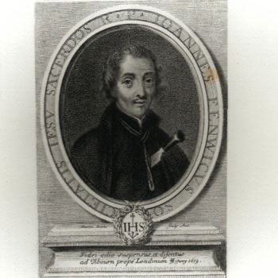

Isusovački blaženici
Svećenik
Bl. Ivan Fenwick
1628. – 1679.
Engleski obraćenik i isusovac djelovao je u Saint-Omeru i londonskoj misiji te stradao kao žrtva lažnih optužaba Titusa Oatesa protiv katolika i isusovaca.
Tekst je preveden i prilagođen uz pomoć umjetne inteligencije.

Izvor slike
- Spomendan
- 1. prosinca
- Zaštitništvo
- Nije navedeno u izvoru
- Životni vijek
- 1628. – 1679.
- Djelovanje
- Misije i evangelizacija · Obraćenje i novi počeci · Progoni i progonstvo · Mučeništvo
- Razdoblje
- 17. stoljeće
- Ulazak u Družbu
- 1656.
- Svećeničko ređenje
- 1664.
- Rođenje — dostupni podaci
- 1628.; dan i mjesec nisu potvrđeni u provjerenom izvoru.
- Mjesto rođenja
- Durham, Engleska
- Datum smrti
- 20.06.1679.
- Mjesto smrti/mučeništva
- Tyburn, London, Engleska
- Okolnosti smrti/mučeništva
- Pogubljen vješanjem i sakaćenjem zbog katoličkoga svećeništva i djelovanja za progona.
- Uloga
- Svećenik
- Mučenik
- Da
- Ostale oznake
- Žrtva izmišljene Papističke urote Titusa Oatesa
- Pripadnost
- Isusovac
- Drugi oblici imena
- John Fenwick · John · John Caldwell
Životopis
Ivan Fenwick rođen je 1628. u engleskoj protestantskoj obitelji prezimena Caldwell. Njegovo prihvaćanje katoličke vjere izazvalo je tako snažno protivljenje roditelja da je morao napustiti obiteljski dom. Otišao je u Saint-Omer, upoznao isusovce i 1656. pristupio Družbi Isusovoj. Filozofiju i teologiju studirao je u Liègeu, gdje je 1664. primio svećenički red.
Gotovo deset godina nakon ređenja vodio je financijske poslove kolegija u Saint-Omeru. Godine 1674. poslan je u englesku misiju. Boravio je u Londonu i ondje također preuzeo odgovornost za materijalne potrebe apostolata. Njegov rad tako je povezivao svećeničku službu s upravljanjem sredstvima potrebnima za djelovanje zajednice u otežanim okolnostima.
Zajednički povijesni okvir. Progon što ga je pokrenula navodna Oatesova urota zahvatio je i njega. Titus Oates širio je tvrdnje da katolici planiraju ubiti Karla II., srušiti vlast i nasilno obnoviti katoličanstvo. Sudovi su povjerovali optužbama potkrijepljenima lažnim svjedočenjima. Fenwick je osuđen s Thomasom Whitbreadom, Williamom Harcourtom, Antunom Turnerom i Ivanom Gavanom. Petorica su pogubljena na Tyburnu 20. lipnja 1679. Njihova je zajednička smrt bila dio širega vala osuda koje su uslijedile nakon izmišljene urote, a ne dokaz njezina postojanja.
Tekst je preveden i prilagođen uz pomoć umjetne inteligencije.
Pročitaj više na izvornoj stranici ↗